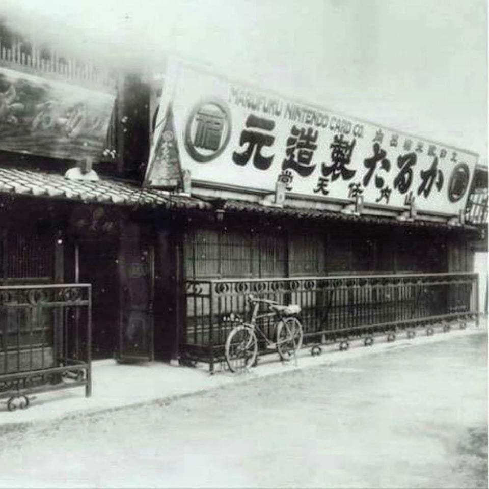

Brindar experiencias de entretenimiento innovadoras y de alta calidad que generen sonrisas en personas de todas las edades alrededor del mundo, mediante el desarrollo de videojuegos, consolas y personajes memorables que fomenten la diversión, la creatividad y la conexión entre las personas.
Ser la empresa líder en entretenimiento interactivo a nivel mundial, reconocida por su capacidad de innovar constantemente, crear experiencias únicas y fortalecer su legado a través de productos y personajes que trasciendan generaciones.
Desarrollar y ofrecer productos y servicios de entretenimiento digital que satisfagan las necesidades de los consumidores, promoviendo la innovación tecnológica y la excelencia en la experiencia de usuario.

La misión de Nintendo es poner sonrisas en la cara de todos los que tocamos. Lo hacemos creando nuevas sorpresas para que personas de todo el mundo disfruten juntas. Hemos forjado nuestro propio camino desde 1889, cuando empezamos a fabricar cartas de naipes hanafuda en Kioto, Japón. Hoy en día, tenemos la suerte de poder compartir nuestros personajes, ideas y mundos a través de los videojuegos y la industria del entretenimiento. Nintendo of America, fundada en 1980 y con sede en Redmond, Washington, es una filial de propiedad total de Nintendo Co., Ltd. Estamos comprometidos a ofrecer productos y servicios de primera clase a nuestros clientes e a invertir en el bienestar de nuestros empleados como parte de la familia global de Nintendo.
Nuestro compromiso es ofrecer productos de calidad, precios accesibles y una experiencia de compra sencilla para todos los fanáticos de Nintendo.